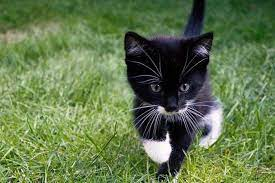
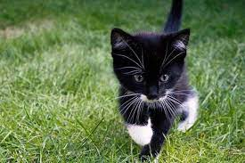
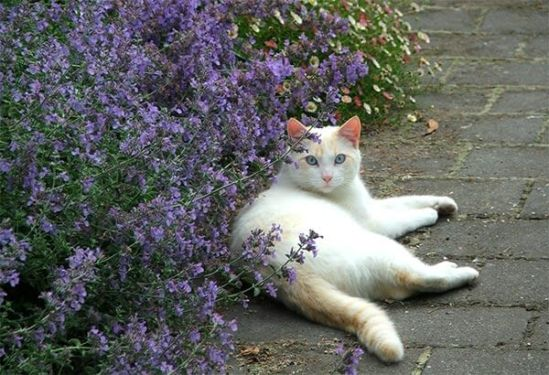
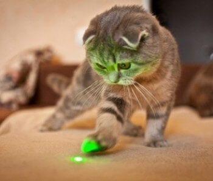
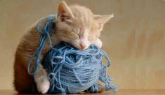
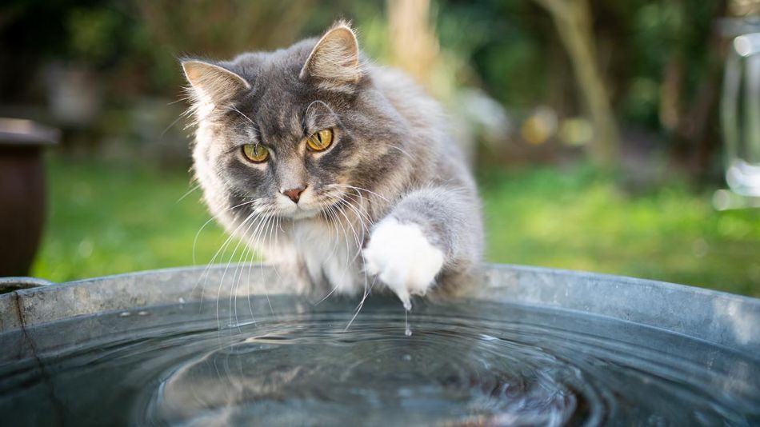
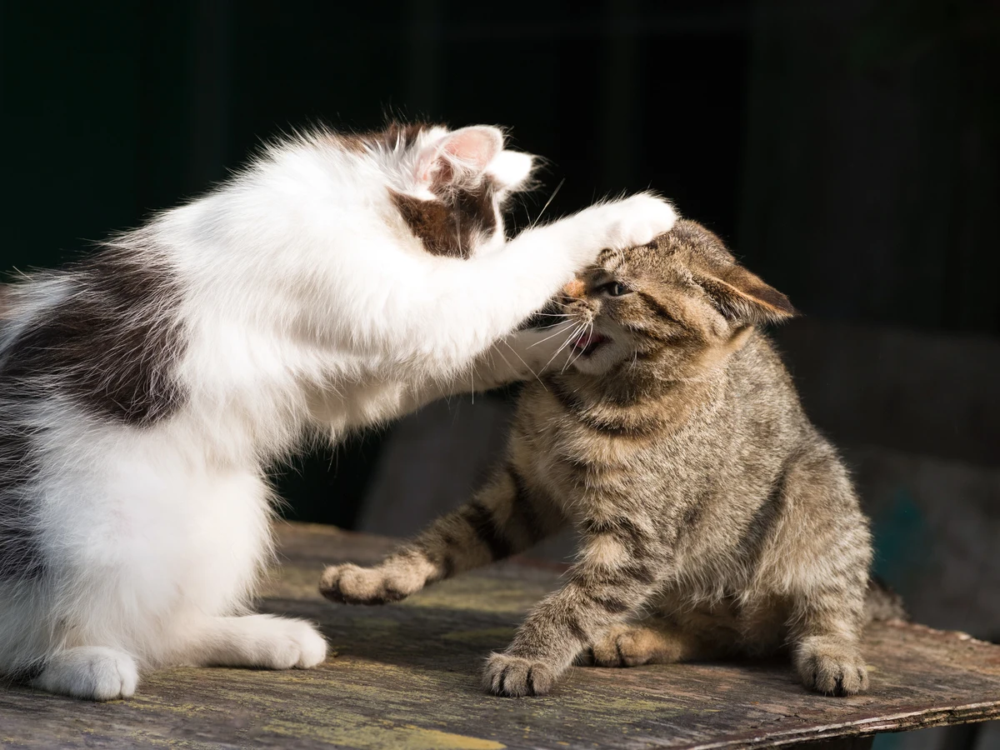

APP DE GATOS
Click para ver mas imagenes de gatos
Descripcion Origen del nombre Origen Informacion 

Cosas que los gatos aman:
- Mentas Gatunas
- Puntero Laser
- Bolas de Lana
La responsable de la respuesta del gato a la hierba gatera es una molécula llamada napetalactona. Se cree que esta molécula puede estar relacionada con la activación de las áreas del sistema nervioso central responsables de la conducta sexual del gato
El brillo de la luz roja y el rápido movimiento del láser hacen que el gato crea que se trata de un ser vivo y, por lo tanto, una presa
A los gatos les gusta jugar con cualquier cosa que se mueva. El hilo es un objeto ligero y se mueve. Les resulta fácil de mover y eso les divierte
Cosas que los gatos odian:
- Agua
- Truenos
- Otros Gatos
El hecho de que la mayoría de ellos provienen de El Medio Oriente, lugar poblado de desiertos en el que el acceso al agua era escaso, los condicionó a desconfiar de este elemento simplemente por extrañeza y desconocimiento
No es raro que un gato tenga miedo a los ruidos fuertes, especialmente los truenos y los fuegos artificiales. Por lo general, se muestran ocultándose. Un gato que sufre de un miedo sustancial a los ruidos fuertes puede comenzar a mostrar un comportamiento ansioso antes de que comience el trueno.

Los gatos son animales territoriales y de costumbres. Les gusta vivir en un ambiente sin cambios, así como disponer de su propio espacio y recursos.
Otra informacion sobre gatos
Descripcion
El gato doméstico12 (Felis silvestris catus), llamado más comúnmente gato, y de forma coloquial minino,3 michino,4 michi,5 micho,6 mizo,7 miz,8 morroño9 o morrongo,10 y algunos nombres más, es un mamífero carnívoro de la familia Felidae. Es una subespecie domesticada, por la convivencia con el ser humano, del gato montés.
Origen del nombre
El nombre actual en muchas lenguas proviene del latín vulgar catus. Paradójicamente, catus aludía a los gatos salvajes, mientras que los gatos domésticos eran llamados felis.
Origen
Como resultado de mutaciones genéticas, cruzamiento y selección artificial, hay numerosas razas. Algunas, como la raza sphynx o la peterbald están desprovistas de pelo; otras carecen de cola, como los gatos de la raza bobtail o la manx, y algunas tienen coloraciones atípicas, como los llamados gatos azules.
El gato se comunica a través de vocalizaciones. Las más populares son su característico maullido y el ronroneo, pero puede aullar, gemir, gruñir y bufar.11 Además, adopta poses o expresiones que informan, a sus congéneres, sus enemigos o sus cuidadores, de su ánimo o sus intenciones.
Informacion
Por su amplio abanico de presas potenciales, por su alta eficiencia como depredador, y por su elevado éxito reproductivo—especialmente si se suministra artificialmente alimento a las colonias sin tomar medidas adicionales para limitar su fertilidad— el gato doméstico está incluido en la lista de las cien especies exóticas invasoras más dañinas del mundo12 de la Unión Internacional para la Conservación de la Naturaleza.